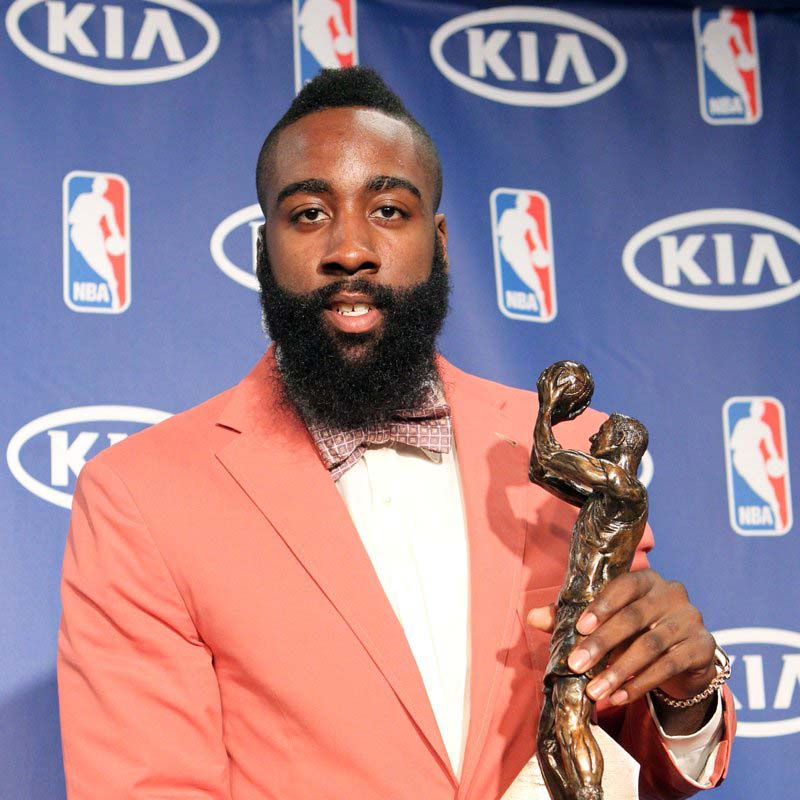
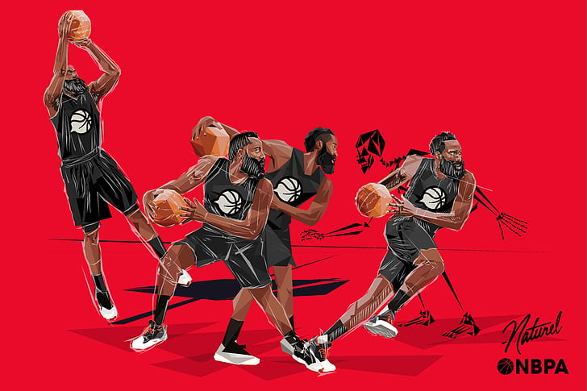
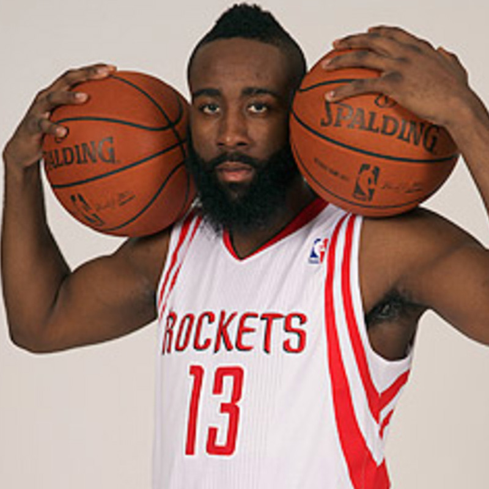
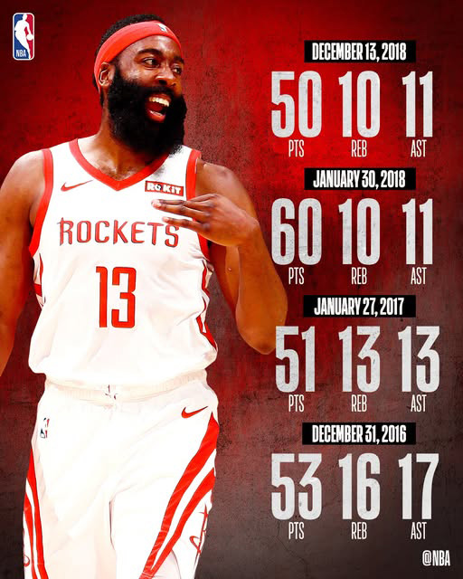
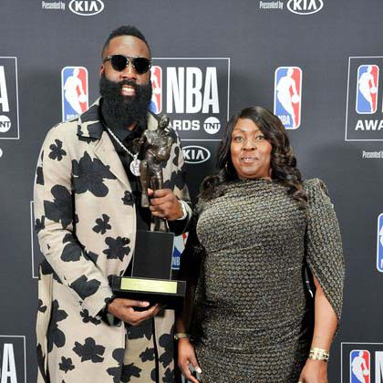
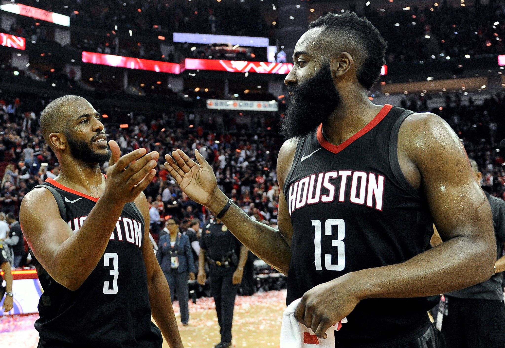
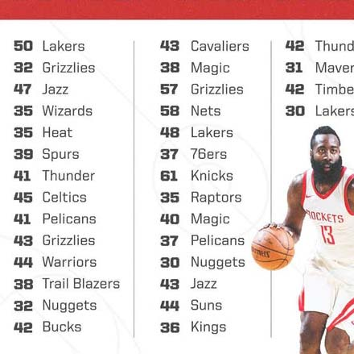
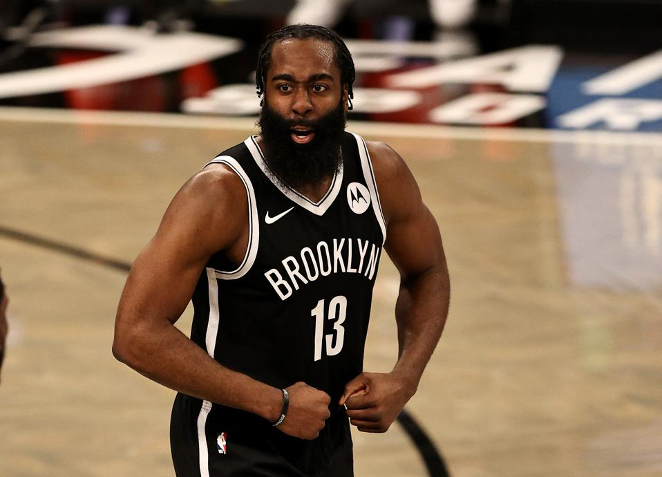
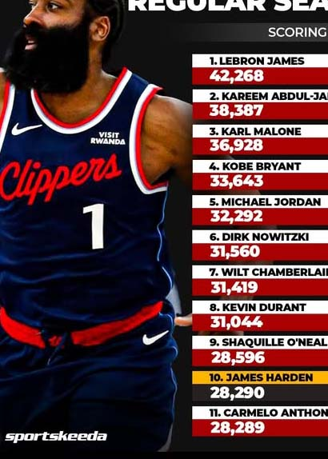
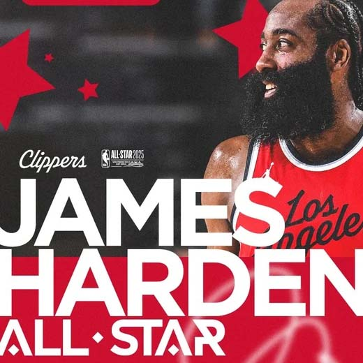

2012

Sixth Man of the Year
Harden’s rise began in Oklahoma City, where he emerged as far more than a bench scorer and established himself as a future superstar.
Storyline
A visual timeline of the milestones that shaped James Harden’s career — from breakthrough recognition to MVP dominance, role evolution, and long-term legacy.


Harden’s rise began in Oklahoma City, where he emerged as far more than a bench scorer and established himself as a future superstar.

A blockbuster move changed Harden’s career and gave him the chance to become the centerpiece of a heliocentric offense.


Harden reached the peak of his individual dominance, highlighted by the first 60-point triple-double in NBA history.

Houston pushed a peak Warriors team to seven games, marking the closest Harden came to reaching the Finals as a franchise leader.

This stretch represented the limit of modern scoring dominance, as defenses knew what was coming but still could not stop it.

In Brooklyn, Harden evolved into an elite offensive organizer and proved that his impact extended beyond scoring.

Reaching the top ten of the all-time scoring list cemented Harden’s place among the greatest offensive players in league history.

Returning to the All-Star stage reflected Harden’s longevity, adaptability, and continued relevance in the later stage of his career.